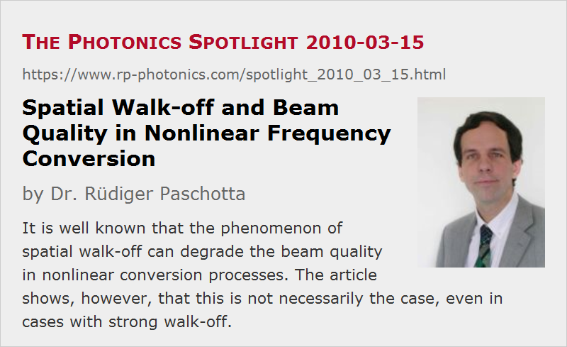

Spatial Walk-off and Beam Quality in Nonlinear Frequency Conversion
Posted on 2010-03-15 as a part of the Photonics Spotlight (available as e-mail newsletter!)
Permanent link: https://www.rp-photonics.com/spotlight_2010_03_15.html
Author: Dr. Rüdiger Paschotta, RP Photonics Consulting GmbH
Abstract: It is well known that the phenomenon of spatial walk-off can degrade the beam quality in nonlinear conversion processes. The article shows, however, that this is not necessarily the case, even in cases with strong walk-off.
Ref.: encyclopedia articles on spatial walk-off, critical phase matching, nonlinear frequency conversion and beam quality

It is well known that the phenomenon of spatial walk-off can degrade the beam quality in nonlinear frequency conversion processes. It occurs only in cases with critical phase matching. At least one of the involved waves has the extraordinary polarization direction, and such components will have intensity distributions which somehow “drift away” from the direction given by the wave vector. This phenomenon is a consequence of the anisotropy of the nonlinear crystal material.
The most common effect of that spatial walk-off is that the generated wave obtains a broader amplitude and intensity profile. This is the case, for example, for frequency doubling in LBO with the type-I scheme XY oo-e, where the harmonic wave (other than the pump wave) experiences walk-off. An interesting question is now whether or not that walk-off degrades the beam quality.
The widening of the harmonic beam as such does not necessarily lead to a degradation of beam quality, even in cases where it is substantial. While the beam waist becomes larger, the beam divergence is also reduced. This is essentially because we still have a “well-behaved” intensity profile, associated with flat or weakly curved wavefronts. In effect, the beam parameter product and thus the M2 factor may remain more or less unchanged!
However, walk-off may indeed reduce the beam quality in situations where it leads to complicated intensity profiles. Typically, this occurs when we have both a strong walk-off and a strong conversion, involving strong pump depletion. The beam divergence may then not decrease as much as the beam radius increases, so that the beam quality is degraded.
Similar Effects Related to Temporal Walk-off
There is a similar effect in the case of temporal walk-off. Here, the product beam becomes temporally longer, but its optical bandwidth also becomes smaller, so that the time–bandwidth product may remain unchanged. However, temporal walk-off may also lead to complicated changes of pulse shape, and in that case the time–bandwidth product may be increased strongly.
This article is a posting of the Photonics Spotlight, authored by Dr. Rüdiger Paschotta. You may link to this page and cite it, because its location is permanent. See also the RP Photonics Encyclopedia.
Note that you can also receive the articles in the form of a newsletter or with an RSS feed.
Questions and Comments from Users
Here you can submit questions and comments. As far as they get accepted by the author, they will appear above this paragraph together with the author’s answer. The author will decide on acceptance based on certain criteria. Essentially, the issue must be of sufficiently broad interest.
Please do not enter personal data here; we would otherwise delete it soon. (See also our privacy declaration.) If you wish to receive personal feedback or consultancy from the author, please contact him e.g. via e-mail.
By submitting the information, you give your consent to the potential publication of your inputs on our website according to our rules. (If you later retract your consent, we will delete those inputs.) As your inputs are first reviewed by the author, they may be published with some delay.
|  |
If you like this page, please share the link with your friends and colleagues, e.g. via social media:
These sharing buttons are implemented in a privacy-friendly way!